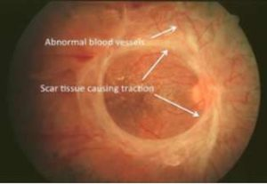

FACILITIES AT AARADHYA NETRALAYA
FULL TIME MEDICAL RETINA SPECIALIST AVAILABLE
VITREORETNA SURGEON AVAILABLE
FUNDUS [RETINA ]PHOTOGRAPHY
LATEST RETINAL LASER MACHINE
RETINA OCT SCAN
DIABETIC RETINOPATHY EVALUATION AND TREATMENT BY SPECIALIST
INTRAVITREAL INJECTIONS[AVASTIN/LUCENTIS/ EYELEA/ OZURDEX] AVAILABLE
TREATMENT OPTIONS FOR VASCULAR DISEASE OF RETINA LIKE RETINAL VEIN OCCLUSION, EALE”S DISEASE
SVITREORETNA SURGERIES WITH CASHLESS FACILITY FOR VARIOUS RETINAL ILLNESSES LIKE
RETINAL DETACHMENT
VITREOUS HAEMOORHAGE
EPIRETINAL MEMBRANES
MACULAR HOLE
AND MANY MORE………
RETINAL DETACHMENT
Retinal detachment describes an emergency situation in which a thin layer of tissue (the retina) at the back of the eye pulls away from its normal position.
Retinal detachment separates the retinal cells from the layer of blood vessels that provides oxygen and nourishment. The longer retinal detachment goes untreated, the greater your risk of permanent vision loss in the affected eye.
Warning signs of retinal detachment may include one or all of the following: the sudden appearance of floaters and flashes and reduced vision. Contacting an eye specialist (ophthalmologist) right away can help save your vision.
Symptoms
Retinal detachment itself is painless.
But warning signs almost always appear before it occurs or has advanced, such as:
The sudden appearance of many floaters — tiny specks that seem to drift through your field of vision
Flashes of light in one or both eyes (photopsia)
Blurred vision
Gradually reduced side (peripheral) vision
A curtain-like shadow over your visual field
Causes
There are three different types of retinal detachment:
Rhegmatogenous
These types of retinal detachments are the most common.
Rhegmatogenous detachments are caused by a hole or tear in the retina that allows fluid to pass through and collect underneath the retina, pulling the retina away from underlying tissues.
The areas where the retina detaches lose their blood supply and stop working, causing you to lose vision.
The most common cause of rhegmatogenous detachment is aging. As you age, the gel-like material that fills the inside of your eye, known as the vitreous (VIT-ree-us), may change in consistency and shrink or become more liquid. Normally, the vitreous separates from the surface of the retina without any complications — a common condition called posterior vitreous detachment (PVD). One complication of this separation is a tear.
As the vitreous separates or peels off the retina, it may tug on the retina with enough force to create a retinal tear. Left untreated, the liquid vitreous can pass through the tear into the space behind the retina, causing the retina to become detached.
Tractional.

This type of detachment can occur when scar tissue grows on the retina’s surface, causing the retina to pull away from the back of the eye.
Tractional detachment is typically seen in people who have poorly controlled diabetes or other conditions.
Exudative.
In this type of detachment, fluid accumulates beneath the retina, but there are no holes or tears in the retina. Exudative detachment can be caused by age-related macular degeneration, injury to the eye, tumors or inflammatory disorders.
Risk factors
The following factors increase your risk of retinal detachment:
Aging — retinal detachment is more common in people over age 50
Previous retinal detachment in one eye
Family history of retinal detachment
Extreme nearsightedness (myopia)
Previous eye surgery, such as cataract removal
Previous severe eye injury
Previous other eye disease or disorder, including retinoschisis, uveitis or thinning of the peripheral retina (lattice degeneration)
Diagnosis
Your doctor may use the following tests, instruments and procedures to diagnose retinal detachment:
Retinal examination. The doctor may use an instrument with a bright light and special lenses to examine the back of your eye, including the retina. This type of device provides a highly detailed view of your whole eye, allowing the doctor to see any retinal holes, tears or detachments.
Ultrasound imaging. Your doctor may use this test if bleeding has occurred in the eye, making it difficult to see your retina.
Your doctor will likely examine both eyes even if you have symptoms in just one. If a tear is not identified at this visit, your doctor may ask you to return within a few weeks to confirm that your eye has not developed a delayed tear as a result of the same vitreous separation. Also, if you experience new symptoms, it’s important to return to your doctor right away.
Treatment
Surgery is almost always used to repair a retinal tear, hole or detachment. Various techniques are available. Ask your ophthalmologist about the risks and benefits of your treatment options. Together you can determine what procedure or combination of procedures is best for you.
Retinal tears
When a retinal tear or hole hasn’t yet progressed to detachment, your eye surgeon may suggest one of the following procedures to prevent retinal detachment and preserve vision.
Laser surgery (photocoagulation). The surgeon directs a laser beam into the eye through the pupil. The laser makes burns around the retinal tear, creating scarring that usually “welds” the retina to underlying tissue.
Freezing (cryopexy). After giving you a local anesthetic to numb your eye, the surgeon applies a freezing probe to the outer surface of the eye directly over the tear. The freezing causes a scar that helps secure the retina to the eye wall.
Both of these procedures are done on an outpatient basis. After your procedure, you’ll likely be advised to avoid activities that might jar the eyes — such as running — for a couple of weeks or so.
Retinal detachment
Illustration depicting pneumatic retinopexy
Pneumatic retinopexy
If your retina has detached, you’ll need surgery to repair it, preferably within days of a diagnosis. The type of surgery your surgeon recommends will depend on several factors, including how severe the detachment is.
Injecting air or gas into your eye. In this procedure, called pneumatic retinopexythe surgeon injects a bubble of air or gas into the center part of the eye (the vitreous cavity). If positioned properly, the bubble pushes the area of the retina containing the hole or holes against the wall of the eye, stopping the flow of fluid into the space behind the retina. Your doctor also uses cryopexy during the procedure to repair the retinal break.
Fluid that had collected under the retina is absorbed by itself, and the retina can then adhere to the wall of your eye. You may need to hold your head in a certain position for up to several days to keep the bubble in the proper position. The bubble eventually will reabsorb on its own.
Indenting the surface of your eye. This procedure, called scleral buckling, involves the surgeon sewing (suturing) a piece of silicone material to the white of your eye (sclera) over the affected area. This procedure indents the wall of the eye and relieves some of the force caused by the vitreous tugging on the retina.
If you have several tears or holes or an extensive detachment, your surgeon may create a scleral buckle that encircles your entire eye like a belt. The buckle is placed in a way that doesn’t block your vision, and it usually remains in place permanently.
Draining and replacing the fluid in the eye. In this procedure, called vitrectomy, the surgeon removes the vitreous along with any tissue that is tugging on the retina. Air, gas or silicone oil is then injected into the vitreous space to help flatten the retina.
Eventually the air, gas or liquid will be absorbed, and the vitreous space will refill with body fluid. If silicone oil was used, it may be surgically removed months later.
Vitrectomy may be combined with a scleral buckling procedure.
After surgery your vision may take several months to improve. You may need a second surgery for successful treatment. Some people never recover all of their lost vision.
RETINAL VEIN OCCLUSION
What is a retinal vein occlusion?
A retinal vein occlusion (RVO) is a blockage of blood flow in one of the retinal veins.
It can occur in either a branch retinal vein (branch retinal vein occlusion, BRVO) or in the central retinal vein (central retinal vein occlusion, CRVO).
The occlusion causes bleeding in either one section of the retina (BRVO) or throughout the retina (CRVO) and can also produce swelling of the macula (macular edema).
The region of the retina in which the blockage occurs will be deprived of oxygen (ischemia).
A retinal vein occlusion will usually be sudden, painless and occur in only one eye at a time.
The most common causes of RVO include:
Diabetes mellitus
Hypertension
Atherosclerosis
Glaucoma
Hypercoagulability (blood clots too easily)*
Vasculitis (inflammation of the blood vessels
What is the treatment for RVO?
Since there is no cure for either BRVO or CRVO, the focus of management is on the following:
The evaluation and treatment of underlying risk factors (e.g., diabetes or hypertension), leading to improved treatment of systemic problems and prevention of heart attack and stroke.
TREATMENT
MACULAR EDEMA
Anti-VEGF injections: In both BRVO and CRVO, abnormally high levels of vascular endothelial growth factor (VEGF) occur, promoting both macular edema and neovascularization.
Anti-VEGF medications that counteract VEGF are injected directly into the vitreous through the sclera (white of the eye).
The eye is numbed before each injection and the doctor closely monitors each patient’s condition following the injection.
Two medications currently being used, Lucentis® (ranibizumab) and Avastin® (bevacizumab), have both been successful in reducing the edema and improving vision in both BRVO and CRVO. A third medication, Eylea® (aflibercept), is effective for treating edema secondary to CRVO.
Laser photocoagulation: Laser has been shown to be effective in improving macular edema in BRVO but not CRVO. A usually painless laser beam is directed through the pupil toward the affected region of the macula. Complications are uncommon, but can include the creation of a blind spot (scotoma).
A common treatment approach is to start with six monthly injections and continue as needed over the next several months. Complications are very uncommon, but can include a) infection (endophthalmitis) b) retinal detachment and c) vitreous hemorrhage, all of which are related to the injection itself and not specifically to the medications. Although only Lucentis and Eylea are approved by the FDA for treatment, Avastin is also commonly used in this manner, and all are thought to be effective and equally safe for the eye.
Steroids: Steroids are another type of medication that can decrease macular edema. Similar to Lucentis, Eylea and Avastin, the steroid is injected directly into the vitreous through the sclera. Two of the most commonly used steroids are preservative-free Triamcinolone Acetonide Suspension and Ozurdex (a dexamethasone implant). The primary difference between them is that the complete dose of triamcinolone is given at one time while small doses of dexamethasone are administered over time, although the treatment is not given more than once every three months. The complications from steroid injections are similar to those of the anti-VEGF injections, but can also include the progression of cataract and the development of glaucoma.
NEOVASCULARIZATION
Laser photocoagulation: Laser is the best way to control and decrease neovascularization in either BRVO or CRVO. A stronger laser is applied to the affected region of the retina. Mild peripheral vision loss can sometimes occur.
AGE RELATED MACULAR DEGENERATION
What is the macula?
The macula is part of the retina at the back of the eye. It is only about 5mm across but is responsible for our central vision, most of our colour vision and the fine detail of what we see.
The macula has a very high concentration of photoreceptor cells – the cells that detect light. They send signals to the brain, which interprets them as images. The rest of the retina processes our peripheral, or side vision.
What is age-related macular degeneration?
There are many forms of macular disease, including age-related macular degeneration or AMD.
This usually affects people over 60 but can happen earlier. The older we are the greater our risk of developing the condition. Around one in every 200 people has AMD at 60.
There are two forms of AMD – dry and wet.
Dry AMD is a gradual deterioration of the macula as the retinal cells die off and are not renewed. The term dry does not mean the person has dry eyes, just that the condition is not wet AMD. There is currently no treatment for dry AMD. The progression of dry AMD varies but in most people it develops over many months or years. Often people carry on as normal for some time.
Wet macular degeneration develops when abnormal blood vessels grow into the macula. These leak blood or fluid which leads to scarring of the macula and rapid loss of central vision. Wet AMD can develop very suddenly. It can now be treated if caught quickly.
Around 10 to 15 per cent of people with dry AMD develop wet AMD so if you have been diagnosed with the dry form of the disease and notice a sudden change in your vision, contact your optometrist or hospital eye specialist urgently. If you have AMD in one eye, the other eye may be affected within a few years.
Symptoms
Macular degeneration affects people in different ways.
Symptoms may develop slowly if you have dry AMD, especially if it’s only in one eye. However, as the condition progresses, your ability to see clearly will change.
• Gaps or dark spots (like a smudge on glasses) may appear in your vision, especially first thing in the morning.
• Objects in front of you might change shape, size or colour or seem to move or disappear. • Colours can fade
. • You may find bright light glaring and uncomfortable or find it difficult to adapt when moving from dark to light environments.
• Words might disappear when you are reading.
• Straight lines such as door frames and lampposts may appear distorted or bent.
This distortion can be checked using an Amsler grid) or against everyday household grids such as bathroom tiles or a window frame.
At hospital further tests will confirm the diagnosis. Eye drops to dilate the pupils to see the back of the eye clearly. These may make your vision blurred and sensitive to light for a short time so consider taking someone with you.
OCT scans.
• Fluorescein dye angiography. A dye injected into a vein in the arm travels to the eye, highlighting the blood vessels in the retina so they can be photographed. Your guide to age-related macular degeneration
Treating AMD Wet AMD can be treated if caught early. Drugs are injected into the eye to stop the growth of the abnormal blood vessels. Following diagnosis people will usually have a loading dose of three injections, once a month for three months. A patient will then be assessed to see if more are required.
The injections are not as bad as they might sound. The patient’s eye is anaesthetised and the needle goes into the corner of the eye so the patient does not see it.
Some people do not respond to the injections and may be offered a form of laser treatment instead.
Causes of age-related macular degeneration
The cause of AMD is not known but there are a number of factors associated with the development of the condition.
Age Age is the main risk factor. As we age, cell regeneration reduces. This increases the risk of developing the condition.
Genetics
A family history of macular degeneration will increase your chances of developing AMD.
Smoking Smoking damages blood vessels and the structure of the eye. Smokers are up to four times more likely to develop macular degeneration than non-smokers. If you also have the particular gene for AMD you are twenty times more likely to develop the condition.
Diet A poor diet low in fruit and vegetables may increase the risk of AMD. Antioxidants and other substances in fruit and vegetables protect the body against the effects of ‘free radicals’. These are unstable molecules that damage cells or prevent cell repair.
Alcohol destroys antioxidants. Obesity and a diet with lots of sugars and hydrogenated or saturated fats also increases the risk of developing AMD.
Blood pressure People with high blood pressure are one and a half times more likely to have AMD than those with normal blood pressure.
Sunlight Macular cells are sensitive to the ultra violet (UV) radiation and visible blue light, which occurs naturally in sunlight. Cell damage from blue light may cause deterioration of the macula. Gender AMD affects men and women equally.
• Do not smoke. This is the most important self-help measure you can take. If you would like help to stop smoking speak to your GP.
• Maintain a healthy weight and blood pressure. • Wear lenses that block UV and blue light, and reduce glare.
• Wear a hat with a brim or visor to shade eyes from direct sunlight.
• Have regular eye tests to spot problems.
• Monitor your vision to check for changes.
• Eat a diet low in saturated fats and rich in omega 3 fatty acids (e.g. oily fish, walnuts) and fresh fruit and vegetables.
• Don’t drink alcohol to excess.
• Take regular exercise.
Nutrition A good diet is important for eye health because certain nutrients protect the body from damaging substances called oxidants. In the eye oxidants may contribute to the development of AMD because they speed up cell degeneration.
Antioxidants like Vitamins A, C and E and a group of substances called carotenoids reduce this damaging effect. Two important carotenoids for people with AMD are lutein and zeaxanthin, which are found in dark green leafy vegetables like spinach and kale.
Eggs also contain lutein and zeaxanthin and zeaxanthin is found in orange and yellow fruits and vegetables such as sweetcorn and orange bell peppers.
Nutritional supplements Two large studies in the USA, the Age-Related Eye Disease Study (AREDS) 1 and 2 have found that certain nutritional supplements can slow down the progression of AMD in people already showing signs of the condition. Ssss
MACULAR HOLE
What is a macular hole?
A macular hole is a small break in the macula, located in the center of the eye’s light-sensitive tissue called the retina. The macula provides the sharp, central vision we need for reading, driving, and seeing fine detail.

A macular hole can cause blurred and distorted central vision. Macular holes are related to aging and usually occur in people over age 60.
There are three stages to a macular hole:
Foveal detachments (Stage I). Without treatment, about half of Stage I macular holes will progress.
Partial-thickness holes (Stage II). Without treatment, about 70 percent of Stage II macular holes will progress.
Full-thickness holes (Stage III).
The size of the hole and its location on the retina determine how much it will affect a person’s vision. When a Stage III macular hole develops, most central and detailed vision can be lost. If left untreated, a macular hole can lead to a detached retina, a sight-threatening condition that should receive immediate medical attention.
Frequently Asked Question About Macular Hole
Is a macular hole the same as age-related macular degeneration?
No. Macular holes and age-related macular degeneration are two separate and distinct conditions, although the symptoms for each are similar. Both conditions are common in people 60 and over. An eye care professional will know the difference.
Causes and Risk Factors
What causes a macular hole?
Most of the eye’s interior is filled with vitreous, a gel-like substance that fills about 80 percent of the eye and helps it maintain a round shape.
The vitreous contains millions of fine fibers that are attached to the surface of the retina.
As we age, the vitreous slowly shrinks and pulls away from the retinal surface. Natural fluids fill the area where the vitreous has contracted. This is normal. In most cases, there are no adverse effects. Some patients may experience a small increase in floaters, which are little “cobwebs” or specks that seem to float about in your field of vision.
However, if the vitreous is firmly attached to the retina when it pulls away, it can tear the retina and create a macular hole. Also, once the vitreous has pulled away from the surface of the retina, some of the fibers can remain on the retinal surface and can contract. This increases tension on the retina and can lead to a macular hole. In either case, the fluid that has replaced the shrunken vitreous can then seep through the hole onto the macula, blurring and distorting central vision.
Macular holes can also occur in other eye disorders, such as high myopia (nearsightedness), injury to the eye, retinal detachment, and, rarely, macular pucker.
Is my other eye at risk?
If a macular hole exists in one eye, there is a 10-15 percent chance that a macular hole will develop in your other eye over your lifetime. Your doctor can discuss this with you.
Symptoms
What are the symptoms of a macular hole?
Macular holes often begin gradually. In the early stage of a macular hole, people may notice a slight distortion or blurriness in their straight-ahead vision. Straight lines or objects can begin to look bent or wavy. Reading and performing other routine tasks with the affected eye become difficult.
Treatment
How is a macular hole treated?
Although some macular holes can seal themselves and require no treatment, surgery is necessary in many cases to help improve vision. In this surgical procedure–called a vitrectomy–the vitreous gel is removed to prevent it from pulling on the retina and replaced with a bubble containing a mixture of air and gas. The bubble acts as an internal, temporary bandage that holds the edge of the macular hole in place as it heals. Surgery is performed under local anesthesia and often on an out-patient basis.
Following surgery, patients must remain in a face-down position, normally for a day or two but sometimes for as long as two-to-three weeks. This position allows the bubble to press against the macula and be gradually reabsorbed by the eye, sealing the hole. As the bubble is reabsorbed, the vitreous cavity refills with natural eye fluids.
Maintaining a face-down position is crucial to the success of the surgery. Because this position can be difficult for many people, it is important to discuss this with your doctor before surgery.
What are the risks of surgery?
The most common risk following macular hole surgery is an increase in the rate of cataract development. In most patients, a cataract can progress rapidly, and often becomes severe enough to require removal. Other less common complications include infection and retinal detachment either during surgery or afterward, both of which can be immediately treated.
For a few months after surgery, patients are not permitted to travel by air. Changes in air pressure may cause the bubble in the eye to expand, increasing pressure inside the eye.
How successful is this surgery?
Vision improvement varies from patient to patient. People that have had a macular hole for less than six months have a better chance of recovering vision than those who have had one for a longer period. Discuss vision recovery with your doctor before your surgery. Vision recovery can continue for as long as three months after surgery.
What if I cannot remain in a face-down position after the surgery?
If you cannot remain in a face-down position for the required period after surgery, vision recovery may not be successful. People who are unable to remain in a face-down position for this length of time may not be good candidates for a vitrectomy. However, there are a number of devices that can make the “face-down” recovery period easier on you. There are also some approaches that can decrease the amount of “face-down” time. Discuss these with your doctor.
CENTRAL SEROUS RETINOPATHY
What is CSR?
CSR is a condition which causes temporary or permanent impairment of vision. It usually affects men between 20 – 45 years of age and is associated with stress.
Why does it occur?
A small pool of fluid accumulates under the macula (part of the retina). This typically becomes noticeable when central vision is affected.
Symptoms
The symptoms are loss of sensitivity in dim light, usually in an oval shaped gray or brown area, blurring or distortion of the visual image.
Although the swelling reduces or distorts vision, the effects are usually temporary. Vision generally recovers on its own within a few months.
In the initial stages of CSR, vision may suddenly become blurred and dim.
Outcome
People with CSR often find that their retinal swelling resolves without treatment and their original vision returns within six months of the onset of symptoms. Some people with frequent episodes may have some permanent vision loss. Recurrences are common and can affect 20% to 50% of people with CSR. While the cause of CSR is unknown, it seems to occur at times of personal or work-related stress.
Treatment

As CSR usually resolves on its own, no treatment may be necessary. Sometimes laser surgery can reduce the swelling sooner, but the final visual outcome is usually about the same. If retinal swelling persists for more than three or four months, or if an examination reveals early retinal degeneration, laser surgery may be helpful.